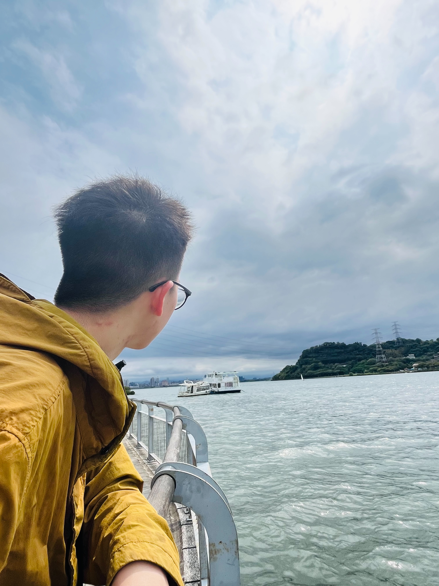
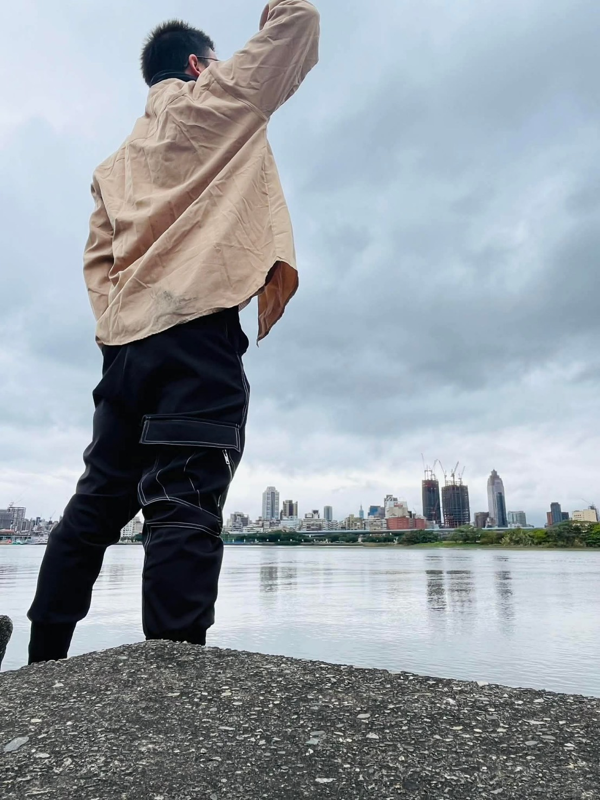
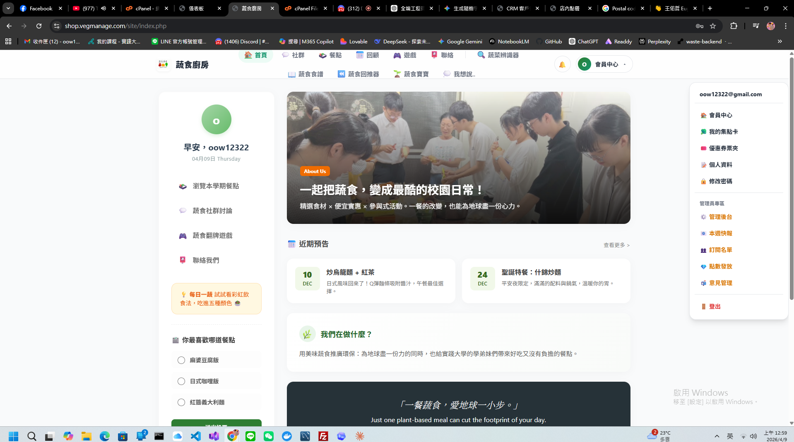
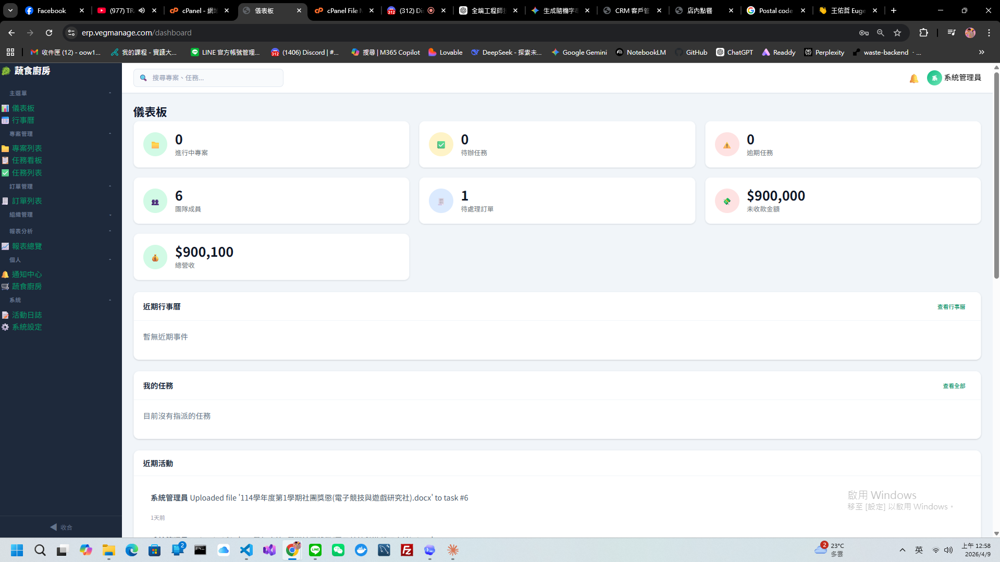
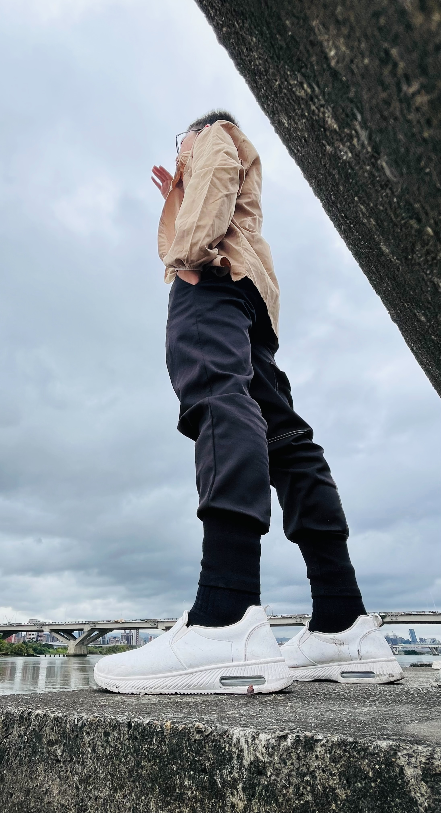

公開案例
3 個代表作品品牌網站、ERP 後台、CRM 模組平台
Chen RuHong / Web Experience / System Design
品牌網站．會員體驗．ERP / CRM．流程整合
把網站做成品牌門面，也做成真正能運作的成長引擎。
我擅長把品牌形象、資訊架構、會員流程與管理後台整合成一套完整的數位作品。 對外，它是能建立信任的品牌首頁；對內，它也能成為更好管理、更好維運的系統入口。
公開案例
3 個代表作品品牌網站、ERP 後台、CRM 模組平台
核心優勢
前台與後台一起規劃不只做視覺，也一起整理資料、流程與管理邏輯
合作價值
讓網站更像一門生意不只是展示，而是能承接互動、營運與成長

Founder-Style Portfolio
Positioning
品牌敘事
流程思維
系統規劃

Selected Domains
shop.vegmanage.com / erp.vegmanage.com / contest.vegmanage.com
What I Build Better
如果你要的不只是切版，而是希望網站同時兼顧形象、流程與未來維運， 我會傾向用完整作品的標準去設計它。
首頁不是堆資訊，而是讓使用者第一眼就感受到專業度、成熟度與可信度。
從瀏覽、點擊、填表、登入到管理，每一步都應該自然、清楚、可預期。
真正有價值的網站，不只吸引人來，更能幫團隊持續管理資料、掌握狀態與放大價值。
Selected Cases
這三個案例分別代表我在品牌前台、營運後台與模組化平台思維上的實作方向。

把品牌敘事、會員中心、活動資訊與內容入口整合在同一個前台， 讓網站不只是資訊頁，而是能承接使用者互動與品牌關係的核心場域。

聚焦在營運效率與管理邏輯，把任務、專案、金流、發票、成員與進度整理成更清楚的後台節奏， 讓資料不只是存在，而是能被快速判讀與執行。
以 ERP dashboard 的方式把 CRM、POS、Booking、SCM、WMS 與自動化資訊整合在同一個系統視角， 讓資料集中、功能清楚，也更方便每天持續管理與追蹤。
Why This Works
所以我做出來的網站，不會只停在「看起來不錯」，而是更接近一個能真正投入使用的產品。
Working Mindset
也因為這樣，我會同時考慮品牌形象、使用者動線、後台邏輯與未來維運， 讓網站更像一個長期資產，而不只是短期作品。
我會先抓到品牌該有的氣質，再決定版面節奏、層級與重點，讓首頁一打開就有專業感。
從導覽、表單、會員入口到管理操作，我會把每一步的使用者動線梳理到順手自然。
不只顧到外觀，也把資料結構、管理介面與實際維運方式一起想進去，避免只好看不好管。
當內容、會員、活動與管理都整合起來，網站就不只是展示，而是品牌每天都能使用的核心工具。

About Me
我對網站的理解不只停留在版面，而是會同時思考使用者怎麼看、團隊怎麼管、品牌怎麼被記住。 也因為這樣，我做出來的東西通常不只是「一頁好看的設計」，而是一套更完整的數位體驗。
如果你期待的是一個既能提升形象、又能讓流程更順、還能留下擴充空間的網站， 我會很適合一起把它做得更完整。
需求拆解與資訊架構整理
前後台體驗整合規劃
視覺質感與操作細節並重
Contact